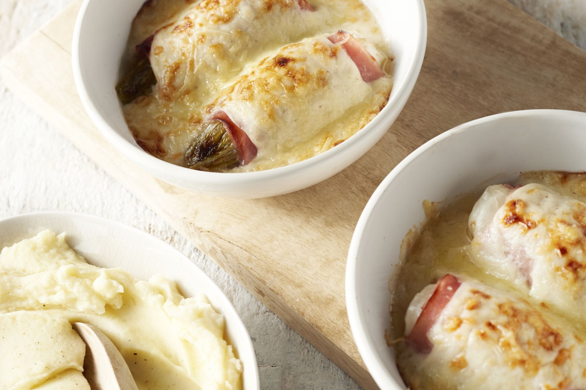

Chicory with ham and cheese sauce

description
Delicious recipe that my late grandmother used to make for little me.
Ingredients (4 people)
- 4 heads of chicory
- slices of ham
- 40 grams of butter
- 50 grams of plain flour
- 250 ml of full-fat milk
- 100 gram grated cheese (Gouda)
- nutmeg
- salt and pepper
Steps
- Pre-heat your oven to a temperature of 180 degrees Celsius or 356 degrees
Fahrenheit. CLEAN the heads of the chicory and remove any sand
and dirty leaves. POUR water in the medium-sized pan and let come
to a boil.
- Boil the heads of chicory for 10 minutes, or until al dente.
Pay attention to this, otherwise, you'll end up with a pan
full of over-cooked chicory. Time can vary depending on the thickness.
Remove from the pan, drain and let cool off to room temperature.
Squeeze out much of the left-over water. Do this gently and use both
hands for this, make sure not to break it.
- Using a paring knife, remove the ends. Melt the butter in a small
saucepan on medium-low heat, then add in the flour. Stir using the
wooden spoon until a roux appears. This is basically flour and fat cooked
together, and we're going to use it to thicken the cheese sauce.
- Season with some salt, pepper and nutmeg. Stir in the cheese, this must
be a cheese that melts easily, like Gouda cheese. Turn off the heat
- Grease the oven dish with butter, wrap 1 or 2 slices of ham around
each cooked head of chicory. Depending on the thickness and how much meat
you would like add more or fewer slices of ham. It's all up to you!
- Place the ham-wrapped chicory into the oven baking tray. Repeat for the other
3 heads of chicory. Add more cheese on top if preferred. Pour over the cheese
sacue and bake the dish in the oven for 20 minutes.